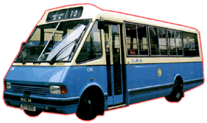

Metro-Cammell Weymann - Metrorider 
 |
車隊編號 Model 引擎 Engine
容積 Engine Capacity 波箱 Gearbox 車身 Body Build 空調系統 A/C
體積 Volume 載客量 Passenger 服役年份 Year |
: CM
1 & CM 2 : Cummins 6BT (145bhp) [CM 1] Perkins [CM 2] : 5.9 liters [CM 1] : Allison AT545 (4-Speed Automatic) : Metro-Cammel Weymann : Nippondenso [CM 1] Mitsubishi (後來加裝) [CM 2] : 8534L X 2413W X 2.794H(mm) : L33 (冇企位) : 1988 - 1993 |
1988 年夏天，一部單層巴士 CM1 從北角出現，車頭寫著 MCW 三個字，原來 MCW 又有新巴士作試用。這次比較特別，因為這部 MCW Metrorider 以單層中型巴士前置引擎設計，車窗被鎖上不能開啟，車裡裝有日本電裝 (Nippondenso) 空調系統由主引擎帶動，而主引擎康明斯 (Cummins) 6BT 加上 Allison AT545 全自動波箱作機械配撘，這個配撘更成為日後單層巴士的基本組合。而另一部 CM2 則以普通版本 (冇冷氣) 示人，但到了另年都是要改裝加回空調機。初時兩部新巴士都被派往行走人流比較少的路線，但是可能巴士本身設計或空間種種問題，所以中巴並未有加以購入﹔而兩部樣板只在路上服務 5 年左右時間，便退下火線。